Tldr: the determinism of DNS poisoned address can be utilized to automatically create routing rules which are pre-defined by the adversary, with a combination of proxy and route hijacking to achieve selective on demand proxying to restore from a DoS (denial of service) attack from T&T Supermarket.
Glossary
DNS Poisoning - the response of domain name system which has been tampered to contain a falsified record (see Figure)
DoS - denial of service, disruption performed by a third party which cause a website or services unusable, in the context of T&T Supermarket, DNS poisoning and SNI based HTTPS certificate hijacking is causes the DoS
Certificate Hijacking - malicious action performed on HTTPS enabled website based on information in the SNI (server name indicator/ClientHello) field, typically involves replacing the authentic website certificate with a untrusted on in order to serve useless and tampered content
T&T Supermarket - a store which sells Chinese goods, the focus is in the Surrey Guildford store, though this is applicable elsewhere in Vancouver too, T&T is known as the adversary
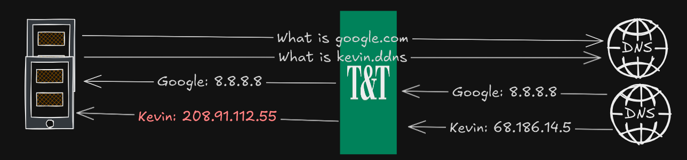
Problem Statement
VPN (virtual private network) or obfuscated proxy can be used to securely access private resources. For example, Wireguard is a real layer 3 VPN that was used to provide controlled access to a Minecraft server (Fleming and Shema, 2025). However, the nature of VPN that encrypt all network data poses several downsides.
- Computing costs of encryption, given VPN will add additional headers and encrypt it all before sending it to the VPN server, it can be an issue for mobile smartphone and laptop
- Latency increase and speed bottleneck. When using a VPN, all data must be sent to the VPN server first before it arrives at the destination. If the VPN server is located far away, this will increase latency and may not be ideal for real-time applications. Additionally, the speed will become a bottleneck and all traffic routed through it will be limited, even for YouTube or speed test
- In most cases, when VPN is on, all traffic (even operating system background) will be routed, from the perspective of a network operator, they will see the client is only connecting to a single server for long sessions. This could compromise the safety of the VPN server.
If the drawbacks of global proxying (全局) is noticeable, full direct (China blacklist) and proxying only the site that requires it can be an option. Especially with proxies that support domain based routing. However, this comes with drawbacks too. Most notably, is that we are not aware which website that requires proxying. We are unable to determine the scope and magnitude of DoS (denial of service) attack performed by T&T Supermarket or conclude definitive website categorization. Adding websites to proxy list can be cumbersome, especially on mobile phones.
- User would need to open the app, configure domain routing rules, add the domain or keyword, restart the service
That is assuming the user app has a GUI (graphical user interface), for json or yaml based configuration, this task is even more difficult. Suppose on day 1, user discover network security site is under DoS attack at T&T, they add the rule in their proxy. On day 2, user discover K-pop sites follows the same problem and must repeat the same step. This repeat until all the sites are fully added to the proxy list. The inconvenience of accessing website and manually configuring rules significantly reduces the user experience and the seamless web browsing experience.
While selective proxying which finalizes direct access reduce the downsides of global proxying. It’s imperfection demands a robust, seamless method to configure domain routing rules. This can be represented as a statistics problem in figure below, in the context of direct selective proxying:
- μ represents the entire population, which is all the HTTPS websites with a valid domain name
- A represent the sample, which is list of websites that needs to be added to be proxied
- B represent the entire scope of all websites which T&T performs a DoS attack
- A&B - all the websites which T&T performs a DoS attack but has been safely added to proxy list
- A&B’ - sites which T&T do not attack but has been added to the proxy list
- A’&B - sites which aren’t on the proxy list and T&T is actively attacking
The goal of the sampling is to maximize the intersection A&B while minimizing A&B’ and A’&B, with the consequences as follows
- A&B’ - accessing these sites are always proxied, higher battery usage and VPN bottleneck occurs when accessing these sites
- A’&B - accessing these sites require manual modification of proxy rules which are inconvenient and time-consuming
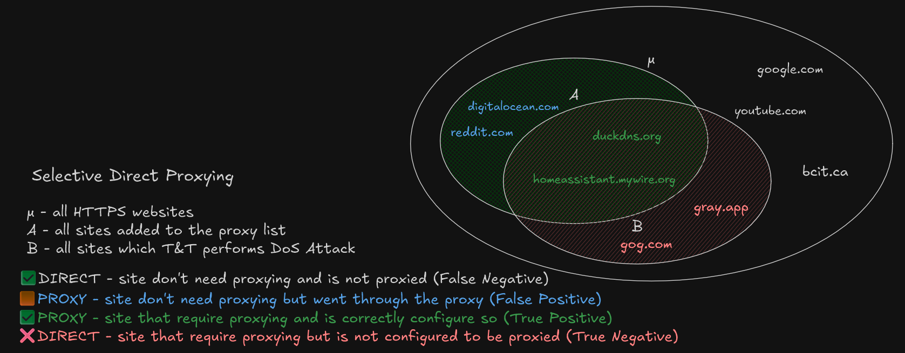
Hypothesis
Based on preliminary analysis. It is observed when querying the DNS of certain websites, the IPv4 or A record is not the expected. The querying was completed on a Samsung phone, using Termux app.
dig +short A vttc.dpdns.org # Expected: Cloudflare ASN; Observed: 208.91.112.55
dig +short A 127.0.0.1.nip.io # Expected: 127.0.0.1; Observed: 208.91.112.55Even websites that supposed to point to localhost returns an unknown address.
This occurs because DNS is in plaintext. When it’s sent over the internet, anyone can observe even modify the content, which is what T&T has done. Given the plaintext DNS, even querying with dig +short A @8.8.8.8 results the same since T&T can see inside the DNS packet and insert it’s own content before returning the result, without the user noticing.
If no encrypted DNS services is used. When visiting these websites, the browser will make a connection to 208.91.112.55 rather than its intended target. Such malicious actions makes the user unable to access the website and perform business logic, hence a Denial of Service.
However, in all cases of DNS poisoning. The resulting address is the same. The hypothesis, if we can control that server, we are able to redirect hijacked traffic to the real destination.. The DNS poisoning list is likely setup by someone at T&T and likely covers a good proportion of B. The irony is that we are piggybacking of their “hard work” to do the opposite and fulfill our own gains.
Multiplexing HTTP
Given HTTP data can be multiplexed, meaning multiple website can run on the same TCP port. The webserver can identify which website it’s being requested via the HTTP Host header, or SNI for HTTPS traffic. Given that all poisoned websites goes to the same 208 address, a webserver on 208 has the ability to see the intent, hence proxying the traffic to the correct destination.
In a typical HTTP/S request, client first establish a TLS connection with a specific SNI. The only difference here is the client establishes it to 208 instead of the intended destination. Therefore, the server on 208 is aware of the website the client tries to visit by the SNI and forward the SNI to the correct destination.
Experiment
The setup has an already working VPN/proxy node that can be used in T&T Supermarket. Any modification will be built on-top of the pre-existing VLESS+WS+TLS on Telus PureFibre network masquerading behind a Amazon AWS CloudFront CDN. For the clients, the tests are done on an Samsung Android 15, using software V2RayNG v1.10.24.
The VLESS+WS server is setup on a Debian Linux server “MS”, using the software 3X-UI; the same server also runs Nginx Proxy Manager, for tool for serving web services, which also adds the TLS (Transport Layer Security) layer. Various other services such as Home Assistant, Jellyfin and OpenSpeedTest is used for demonstration purposes. Port forwarding of public IP 443 was mapped to “MS” port 443.
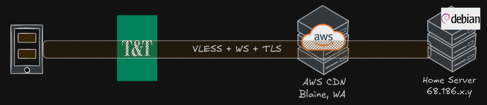
In order to not compromise the stability of MS with arbitrary network configuration, an additional proxy server “VM” was run in a Debian virtual machine with 2 core and 2GB RAM on a Windows host. To connect “MS” with “VM”, a SOCKS5 proxy server was created on “VM” to bridge the route.
To specify a custom network, the Docker networking feature allows user to create a network arbitrary IP range, Docker will handle the routing automatically.
docker network create --subnet=208.91.112.0/24 mynetAnd to create the web server, nginx was used, and it has a specified address of 208.91.112.55, the same address which T&T used to poison us.
docker run -d --rm --network mynet --name my-nginx --ip 208.91.112.55 # incomplete Docker commandAt this step, on the “VM”, there exists a service with an IP address of 208.91.112.55. If any services on “VM” that needs to access there will not be routed on the public internet, but to the PC itself. Attempting to ping 208.91.112.55 yields expected result.
ping 208.91.112.55 # 0.3ms (only possible on localhost-like networking)Now we are successfully hijacked the route to 208.91.112.55 on the “VM”. On “MS”, a specific routing rule was created, where all traffic destined 208 must go through the SOCKS5 proxy on the VM, which in turn routes it to a customized Nginx server, which is configured as a SNI proxy.
- read the incoming SNI data from SOCKS5 proxy
- do not decrypt or serve content, but forward it directly to the original host
- logs the requests to file
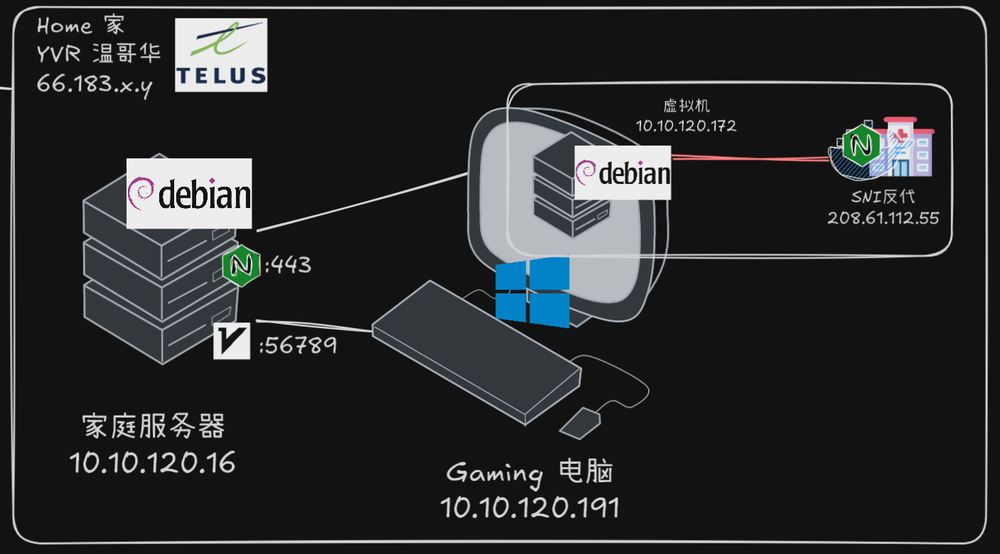
To confirm everything works, the curl --resolve option force pin a domain to an IP address to make the request. As expected, the content of duckdns has appeared despite the DNS was “poisoned” and hijacked to 208.
curl -vk --resolve duckdns.org:443:208.91.112.55 https://duckdns.orgThis confirms on the “VM” itself, Nginx works normally. Now to test the SOCKS5 proxy on another computer in the network
curl -vk --socks5 vm-ip:1080 --resolve duckdns.org:443:208.91.112.55 https://duckdns.orgThe --socks5 makes curl requests with a proxy server, even on another device, the SOCKS5 in combination with hijacked route works.
Observation
Upon connecting to “T&T Public” Wi-Fi and completing the captive login. The query of site: loseyourip.com was performed, which yields a list of result for domains ending in loseyourip.com. T&T performed a non-consensual DoS attack featuring certificate hijacking, and a site warning was raised, the site business logic and functions is not accessible. Using dig on Termux confirms both DNS poisoning and certificate hijacking are the mechanism of DoS attack.
Then V2RayNG was enabled on the VLESS+WS+TLS server behind the CDN. For the following, the Android Private DNS feature is changed from Automatic to Off, and routeOnly was enabled. For the routing rules, the only proxy rule is for the IP range 208.91.112.0/24 was added and everything goes directly without proxy. Sites such as loseyourip.com was explicitly not added to the proxy.
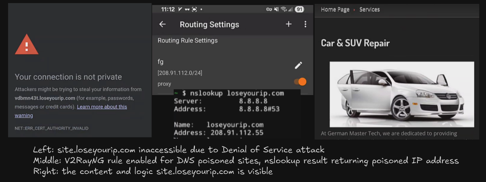
Upon enabling V2RayNG, the sites which previously raised a certificate error was able to be rendered slowly on the browser and all functionality remains intact. And SSH into the “MS” and “VM” with
tail -f sniproxy-access.log shows the site that was previously accessed.
Discussion
The observation confirms the proof of concept is working as intended, where despite everything is set to direct; due to DNS poisoning from T&T, sites like loseyourip.com can be accessed successfully without DoS attack, despite the site was never added to the proxy list. This approach effectively utilize the T&T list of domains to poison and exploit their work for building robust proxy rules.
The Android Private DNS must be disabled as it can interfere with “DNS poisoning”. With an encrypted DNS server, T&T cannot see the content of the DNS and cannot modify it. Therefore, the resulting A record is no longer 208. Since the setup only proxy traffic if the destination is 208, if a domain was resolved to its real address, it won’t be proxied, and now it’s subject to certificate hijacking. Similarly, routeOnly was turned on in V2RayNG such that the DNS resolution happens on devices and it’s results are only used for routing, rather than the DNS being proxied. Both are required to utilize the effect of DNS poisoning.
The speed of loading is not snappy, it’s possible that additional SOCK5 proxy, VMWare networking and the overhead of Nginx re-processing adds significant delays to the proxied sites. However, most sites tested were likely across the country or continent, the slowdown could be expected. When testing on the OpenSpeedTest and Home Assistant server running on “MS”, the ping was 35ms, and Home Assistant loaded reasonably. This suggests the slowdown is present but not deal-breaking.
Full Traffic Flow
Client attempts to connect to somesite.loseyourip.com
DNS for somesite.loseyourip.com returns a poisoned address 208.91.112.55
V2RayNG checks the traffic is destined for 208, despite the being poisoned
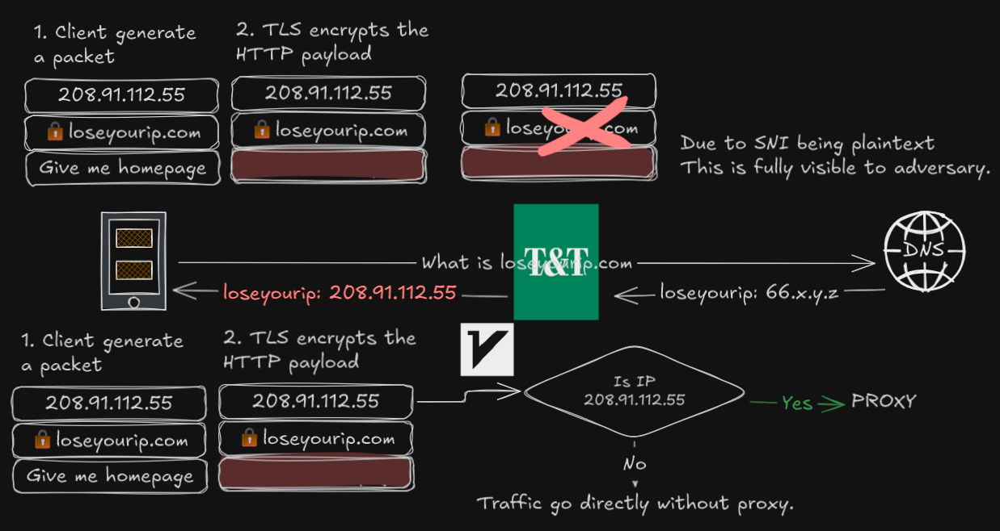
The traffic is encrypted and sent via VLESS+WS+TLS over CloudFront CDN
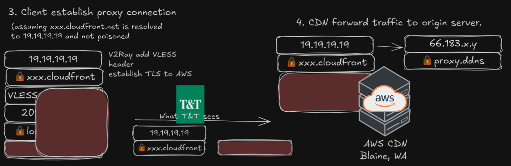
Traffic arrives at home server, Nginx Proxy Manager decrypt TLS and pass it to the backend (V2Ray)
V2Ray sees the VLESS traffic has a destination of
208, checks rule and send it to the SOCKS proxy on the VM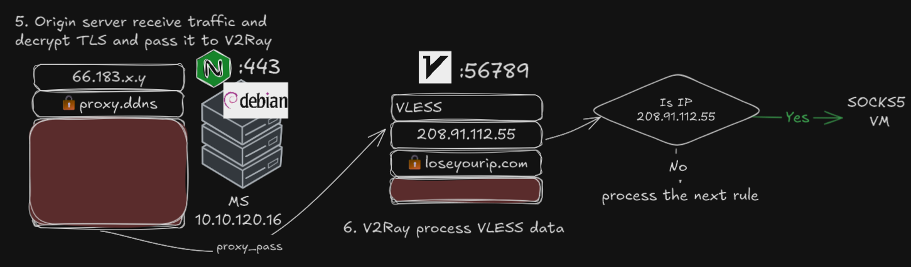
VM receive the traffic, visits
somesite.loseyourip.com on 208 on the user’s behalfInstead of
208 on the public internet, the IP address belongs in the same host which Nginx is runningNginx checks the SNI and passthrough the SNI and data to the original server untouched
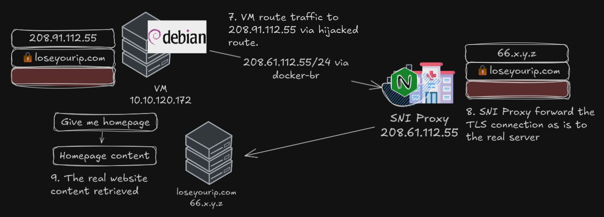
Limitations
While this method successfully configure routing based on DNS poisoning, it adds more overhead to the proxied site, not resistant against non-DNS-poisoned DoS attacks and suffers the consequences of DNS poisoning in non-web applications.
The DNS poisoning only occur on a subset of websites. This method covers 100% of B where DNS poisoning was used; however, at T&T, DNS poisoning is occurs on a small subset of websites, where SNI-based hijackings occurs in all of B. If a domain was not poisoned to 208 but certificate hijacking occurs, this would be ineffective, user must manually add that site.
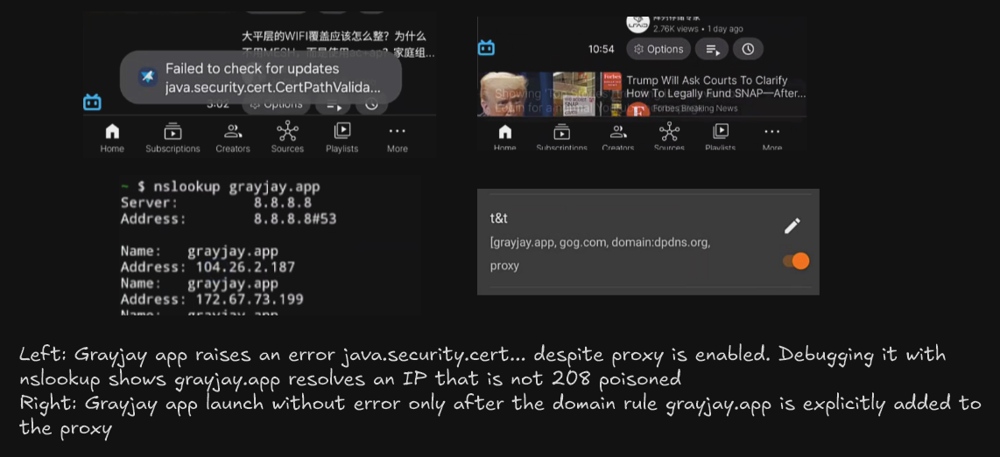
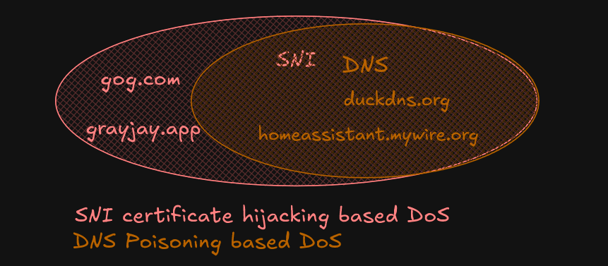
- For example, in the video, user opens Grayjay app, it raises a Java certificate error despite the proxy is connected. To triage, the
dig/nslookupofgrayjay.appreturns104a real Cloudflare address, hence the proxy rule was not triggered. The app error goes away only when the user explicitly addgrayjay.appto the proxy list.
This setup also breaks compatibility with dpdns.org sites, which is usually hosted on Cloudflare. Surprisingly, these sites works great on Android web browsers without any VPN, but when VPN is enabled, these raised DNS name not found error. The hypothesis is ECH (encrypted client hello) is affecting some portion of it, where the SNI became cloudflare-ech.com rather than the original dpdns.org. This explains why despite nslookup returns 208, curl raises certificate error, but these still works in the browser. It’s possible with how Android process DNS and it’s impossible to debug due to system limitation. On a Windows device, where there are finer controls and DNS and ECH settings, dpdns.org may work.
The addition of another SOCKS proxy adds overhead, specifically one that is running on a resource-constrained Type 2 virtual machine. All traffic that needs to be proxied must go through the proxy first.
- For apps such as Home Assistant which runs on “MS”, in normal proxying, a DNS record on “MS” would route Home Assistant directly there. Whereas with the “VM” proxy and Nginx, the traffic is sent to “VM”, the to Nginx, which resolves Home Assistant to an external WAN IP, and perform NAT hairpin, add unnecessary hops.
When sites are poisoned with 208, the routing rules on “MS” configures it so it will always go to 208. There is no override because of the poisoned address. Hence, when the SOCKS proxy or Nginx fails, all poisoned sites remains inaccessible. Although the SOCKS proxy and the “VM” can be eliminated such that the Nginx runs on “MS”.
As for non-web traffic. Given we used routeOnly, the address is resolved before proxying decision is made. Since HTTP traffic is multiplexed, we can utilize Nginx to parse the SNI and make various decisions. Same cannot be said for SSH or other protocols which cannot be multiplexed. Even suppose the entirety of port 22 was proxied. If the host X and Y are both poisoned to 208, both hosts will go through the proxy, but with the same destination, 208. Even if there is a SSH server at 208, it cannot parse whether the request is for X or Y. This demonstrate the true problem of DNS poisoning.
Conclusion
This setup successfully demonstrated a method to couteract a DoS attack leveraging DNS poisoning. By controlling the destination IP address that DNS poisoning redirects traffic to, we can implement a proxy server capable of identifying the intended destination via SNI and routing traffic accordingly. This approach effectively utilizes the adversary’s infrastructure to restore access to targeted websites without requiring manual configuration of proxy rules. While this method introduces some overhead and has limitations, particularly with non-web traffic and scenarios where DNS poisoning is not universally applied, it offers a novel and automated solution for mitigating specific types of network attacks.
Based on the limitation of this setup. Selective Global Proxying (Whitelist Mode) could strike a balance between user experience, battery consumption, and performance bottlenecks, a “whitelist” approach to selective proxying could be implemented.
- Finalize proxying by default. This ensures that sites targeted by all mechanism of DoS attacks are automatically handled, without manual intervention.
- Whitelisting prominent and bandwidth intensive websites like Google, YouTube, Speedtest and BCIT. These sites would bypass the proxy and connect directly.
This hybrid model minimizes the inconvenience of manually adding sites to a proxy list while still mitigating the impact of targeted attacks and reducing unnecessary proxy usage for high-bandwidth services. This could lead to a more seamless browsing experience and improved battery life compared to a full global proxy or selective direct proxy.